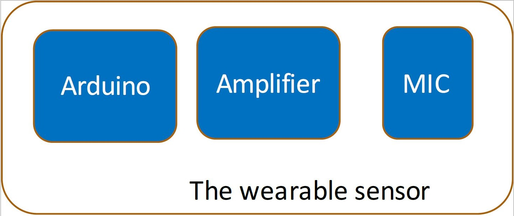
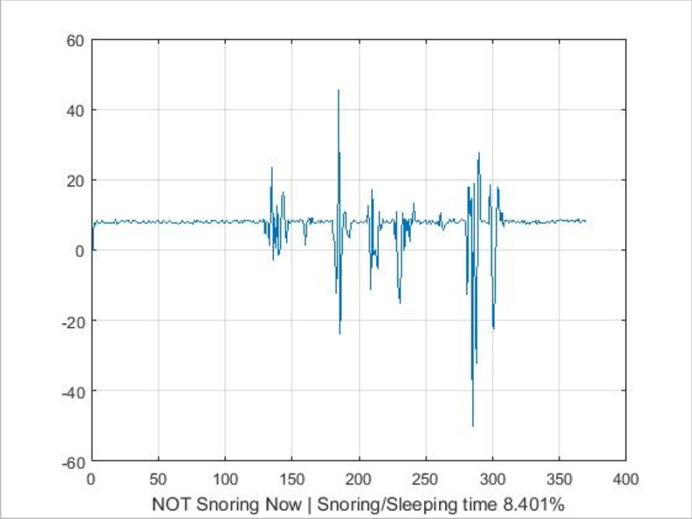
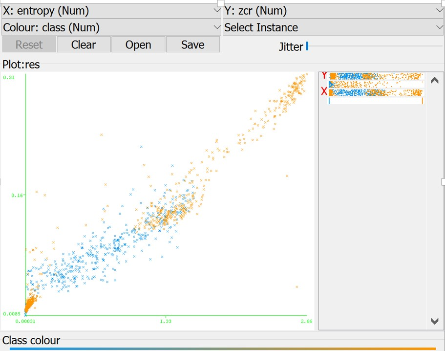

Abstract
Several studies have shown that snoring is the first symptom of Obstructive Sleep Apnea Syndrome. Snoring has also been reported in the literature as a risk factor in many diseases. Our group has developed a real time system that could detect snoring activity to be applied for future sleep quality analysis. This detector was based on conventional sound intensity study and recorded the total percentage of snoring time. In this work, we approached the sliding window algorithms to classify snoring data and un-snoring data. The detector has been tested with 6 snoring episodes and the results have shown a good performance with slightly variations due to the quality of microphone sensor.
Keywords—Sleep Monitoring; Snoring Signal; Classification; Detection;
Introduction
Temporary collapse of the upper airway during sleep has various effects on the human body, ranging from snoring to obstructive sleep apnea (OSA),in which simple snoring is the most common symptom of sleep diseases. A large portion of the subjects respond that they ‘‘do not know’’ if they snore, the only way they know whether they are snoring or not can only be obtained by two methods: either be informed by their partner or be diagnosed with a clinician. However, neither of these methods are convenient enough for people to discover potential snoring disease on their own. There is an urgent need for simple and reliable method for snore detection and analysis.It would be advantageous if people could retrieve simple snorning analysis before they see a clinician.
A small number of previous studies have addressed on automatic detection and classification of snoring signals. Several classification techniques have been suggested, including the pitch and formants in which the spectrum features such as MFCC(Mel-frequency cepstral coefficients)[1]. Karuna-jeewaet al. proposed a method for classifying snores and breathing sounds using the mean and covariance of four features extracted from time and spectral domains [2]. The need for an agreed upon approach to extract and analyze whole-night snoring sounds is of major importance to the field of sleep-disordered breathing[3]. Our goal is to build and develop a robust snore detection and snore percentage time prediction system using a microphone sensor connected to arduino. Our snore and analysis detection methods are based on three aspects: 1) Signal enhancement and segmentation, 2) Feature extraction that included the key features in energy domain 3) Detection of snore events using our own sliding window algorithms.
The novelty of our proposed method is that we can show in real time whether people are snoring or not based on the analysis of snore intensity and the total percentage of time on snoring is also presented. What’s more, this approach includes comprehensive sets of features involving time domains. In addition, we are working towards the goal of providing a snoring score that could quantify the severeness of snore which would be help resources for early screening of obstructive sleep apnea (OSA).
Materials and Methods
Sensor Hardware

Fig 1. Sensor Block Diagram
The sensor consists of three parts, a mic to convert sound wave to electric signal, an analog amplifier to magnify the signal, and an Arduino. The signal is input into Arduino’s analog pin, with integrated ADC. Finally, digitalized signal is sent through arduino to mobile device at 20Hz sample rate. In algorithm, we’ll discuss that this is enough for a snoring detection process. However, in future work, we’ll consider that we use much higher sample for more complicated purpose.
System
Fig 2. System Block Diagram
Fig 2 shows a system diagram of how each parts work together. The snoring data is acquired through the sensor hardware, and sent to mobile device. The corresponding application on the device is more than a data gateway, which also labels the data with user information, such as user name, record date, location etc. The processed data is then sent to database in the server.
On server end, certain user’s snoring data is stored in time sequence. User can check out historical snoring data from the server with the mobile device. Also those data is analyzed and studied. A back-end application is running on server side, which is invisible to any individual user. It will gather all snoring information from people, conduct study with machine learning methods and clinic domain knowledge on snoring and sleeping related disease.
Server
In the design, the server side is more than just data warehouse. Studies have shown that certain symptom of some diseases can be indicated through patient's’ snoring sound, from both amplitude and frequency information. The server shall utilize a machine learning algorithm to give user a fair warning upon potential disease or danger of attacks during sleep.
Due to most people are unconscious during sleep, usually ones who snore have no idea how bad it can be. As one important motivation of this study, to enhance user’s awareness of snoring, the server scores and ranks user’s snoring. This can reveal a comparison against other user, so that people who snore will know that how much worse their symptom can be.
Algorithms
From the sensor front end to mobile device, the primary information of snoring data is acquired. In this study, we implemented a real time snoring detection method.
Snoring Detection
Based on the sampling mechanism, the real time snoring sound waveform is a continuous time sequenced data array. We use a queue structure of certain length to store the latest set of sampling points. Given the assumption that a sleeping environment is relatively quiet, a continuous set of high amplitude sampling points is recognized as a snoring breath.
Self Adaptive
Since strength of the snoring varies from people to people, and the signal strength can also affected by multiple factors such as distance from nose to the sensor, mic condition. And for future use, the system should be able to get rid of offset shift. A self adaptive mechanism is necessary here to enhance accuracy. It consists of two steps. One, offset correction, which reset the zero point to current background sound strength. Second, threshold correction. The threshold is the border of snoring and non-snoring distinguishment. The system automatically adjust this threshold according to peak to zero amplitude.
Anti-Jittering

Fig 3. Sliding Window Algorithm
Since the sound signal is unpredictable, a single threshold can result in jittering, especially when the signal fluctuates up and down close to the threshold. We use a double threshold mechanism to avoid this. Threshold to enter snoring status is set to be higher than threshold to leave snoring status, which forms a container. When the data within the window fluctuates between the upper and lower threshold, it’s still in container, in the snoring status.
Conclusion
In this paper, we discussed a snoring detection system design. It utilized the convenience of popularized mobile device, that basically anyone with a cell phone or pad can be a potential user. It solves the problem that people who snore are usually unaware of their own condition and they lack access to a straightforward representation of their symptom. Before, patients are often motivated by their partners’ complain, when they already suffer the problem to a point where they can not stand anymore. With this system, patience will be able to know their severity by checking the application themselves.
Due to resource limit, we don’t have enough snoring samples to develop an extended machine learning model for disease diagnosis. But this can be an important topic for computer science and medication interdiscipline.
The snoring recognition algorithm works well on existing snoring samples (three different pieces, two male and one female). As it’s based on signal strength, the assumption that a sleeping environment should be quiet, is important. Given the sensor will be placed close to user’s head, snoring sound if exists, can be quite strong, which make it quite robust.
Future Work
-
Enhance sample rate for more complicated analysis(diagnosis of certain disease)
The sensor we used have is constrained in many aspects. And we have already make it more sensitive by applying the applifier. If we could enhance the sample rate to a certain level, then we could get more accurate data which can be used to implement classification of OSA patient’s snoring and simple(normal) snoring.
-
Continue our study in spectral analysis of sound
Our key insight is that snoring and un snoring data have distinguishable features in terms of energy and frequency. The disparity of spectral energy distributions among snoring and other signals suggests the use of spectral features may be helpful in order to distinguish among snoring sounds and breathing sounds. In order to build a simple classifier, we decided to extract the zero-crossing rate, spectral energy and spectral entropy of the signals after which has been divided to a certain number of subsystem during segmentation[4]. Due to the lack of snoring database, we have finished segmentation and labeling task. In the training step we found that the k-nearest neighbour algorithms could provide the best results with the least error.
-
Enhance our system by Clinical Trial
We will test with snoring patients in a quiet environment and let clinicians do the manual recordings of the patient’s sleeping samples to diagnose whether the patients have obstructive sleep apnea (OSA) or not. After the labeling step, we will implement classification between the two classes by extracting the spectral features of the signals.
-
Provide a snoring scoring system for users
Since the system is designed for users with no knowledge of signal processing, we cannot simply generated raw data of the sound. Despite the snore/total sleep time percentage we can show to the user, another aspect concerning the snore intensity can also be provided. To build a scoring system of snore intensity, we need to do multiple experiments with different level of already labeled snorers. The score should reflect the severity of snoring and inform user feedback on whether they should go to hospital for potential snoring disease.

Fig 4. Feature Classification
References
[1] Deller JR, Hansen JHL, Proakis JL (2000) Discrete-time processing of speech signals. New York: Institute of Electrical and Electronics Engineers Press.
[2] Karunajeewa AS, Abeyratne UR, Hukins C (2008) Silence-breathing-snore classification from snore-related sounds. Physiol Meas 29: 227–243.
[3] Counter P, Wilson JA (2004) The management of simple snoring. Sleep Med Rev 8: 433–441.
[4] Jones T M, Ho M-S, Earis J E and Swift A C 2006a Acoustic parameters of snoring sound to assess the effectiveness of sleep nasendoscopy in predicting surgical outcome Otolaryngol. Head Neck Surg.